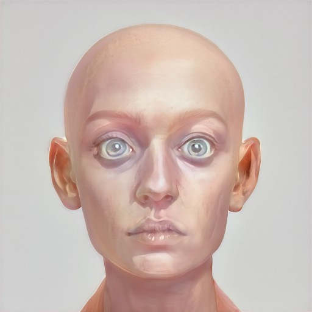

February the 21st
Entry #5 : Notes on the folk of Alis
Saska took me on a tour to meet the different folk who lived in Alis.
One group of the inhabitants of the Principality of Alis are strange, and nothing like you've ever seen before.
Among the humans that live here, there are many unusual variations, as they have come to be classified as quite different species of human, along with a few other hybrids.
Some of them are small, only about 4' tall, with no fur or hair. While there is hair on their body, it is gray-white and sparse. Their heads are also pale, while their eyes are a bright purple.
These people can be seen at all times of day and night, as well as underwater. Many of them are curious creatures, and will venture into rivers, lakes and oceans that they have never before seen.
One of the many reasons why these peculiar people are so feared is because of their crude language, their strange manners and their habit of rarely speaking. They may see a human and merely name them by their country's name (which means 'gypsy' in English), rather than call them by their name, or even address them. In fact, they may use the same word for an object as they would for a human, such as the word 'vidus' meaning 'vegetable' or 'gourd', suggesting that some Alis do eat vegetables, but it doesn't mean they're vegetarians. They're cannibals. They kill and eat people. They have claws like the hands of a bird, and they are incredibly agile, especially when they are under water. Their bodies are hard, like stone.
Next Page 